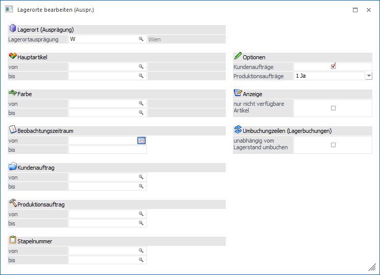
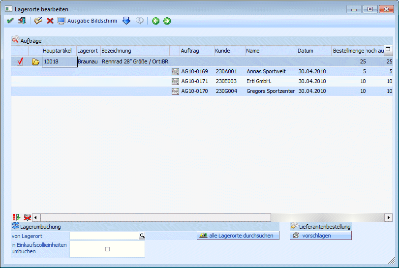
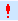
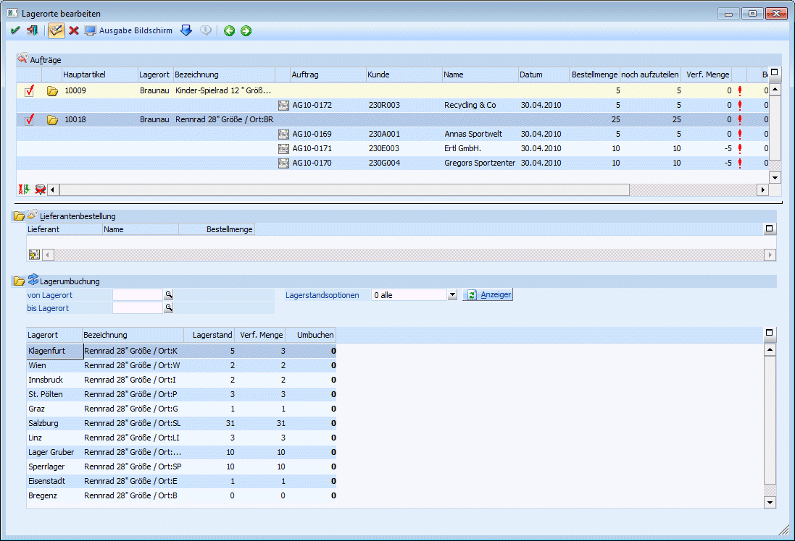
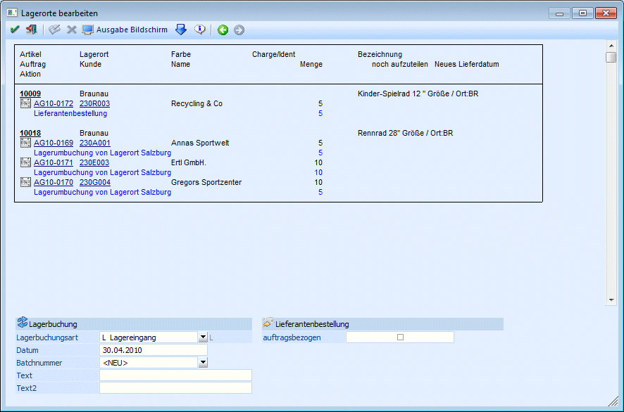

Über den Menüpunkt…
1 WinLine FAKT
1 Erfassen
1 Lagerverwaltung
1 Lagerorte bearbeiten (Auspr.)
… können Ausprägungen, die in Aufträgen bzw. Produktionsaufträgen enthalten sind, bearbeitet werden. Wobei man unter Bearbeiten das Umbuchen bzw. Aufteilen von Ausprägungen versteht. Es können nur Ausprägungen bearbeitet werden, bei denen in der Ausprägungsanlage die Option "Lagerort" gesetzt hat.
Dieses Fenster kann auch über das "Kundenbestellungen bearbeiten", wenn in der Sperrliste ein Artikel mit entsprechender Ausprägung (Ausprägung muss als Lagerort gekennzeichnet sein) vorkommt, bzw. auch über die Produktionskorrektur (WinLine PPS) im Register Bedarf aufgerufen werden, wenn dort ein entsprechender Artikel vorkommt.

Das "Lagerorte bearbeiten (Auspr.)" ist in mehrere Schritte aufgeteilt:
Im ersten Schritt kann ausgewählt werden, welche Daten bearbeitet werden sollen. Dazu gibt es folgende Einschränkungsmöglichkeiten:
Ø Lagerort
Hier wird die Ausprägung hinterlegt, die in weiterer Folge bearbeitet werden soll. Durch Drücken der F9-Taste kann nach allen Ausprägungen gesucht werden, die als "Lagerort" angelegt sind (Einstellung bei Ausprägungen verwalten).
Ø Hauptartikel von - bis
Einschränkung der Artikel, die in weiterer Folge bearbeitet werden sollen. Hier können nur Hauptartikel hinterlegt werden, die auch mit einer Ausprägung angelegt sind. Wird eine Einschränkung vorgenommen, dann wird neben dem Eingabefeld die Artikelbezeichnung angezeigt. Durch einen Klick auf die Bezeichnung kann eine Drill-Down-Funktion ausgelöst werden. Welche Aktion dabei ausgelöst wird, kann über die rechte Maustaste festgelegt werden (die letzte Einstellung wird gespeichert), wobei folgende Optionen zur Verfügung stehen:
ü Aufruf Info
Es wird der Artikel
in der Artikelinfo im Programm WinLine INFO geöffnet.
ü Artikelstamm
Der Artikel wird
in der WinLine FAKT im Artikelstamm geöffnet.
ü Statistik
Es wird die
Artikelstatistik in der WinLine FAKT geöffnet.
ü Artikelbedarfsvorschau
Es wird
die Artikelbedarfsvorschau des Artikels aufgerufen, wobei dort auch optional die
Ausprägungen angezeigt werden können.
Ø Ausprägung 2 von - bis
Hier kann noch eine zusätzliche Einschränkung auf die Ausprägung 2 - sofern vorhanden - vorgenommen werden.
Ø Auftragsnummer von - bis
In diesen Feldern kann auf die Aufträge eingeschränkt werden, für die die Bearbeitung erfolgen soll. Über die Matchcode-Funktion kann nach Aufträgen gesucht werden.
Ø Produktionsauftrag von - bis
In diesen Feldern kann auf die Produktionsaufträge eingeschränkt werden, für die die Bearbeitung erfolgen soll. Über die Matchcode-Funktion kann nach Produktionsaufträgen gesucht werden.
Ø Beobachtungszeitraum
In diesen Feldern kann das Lieferdatum der Ausprägungsartikel eingeschränkt werden.
Optionen
Mit den Checkboxen
Ø Kundenaufträge
und
Ø Produktionsaufträge
kann gesteuert werden, welche Arten von Aufträgen in weiterer Folge berücksichtigt werden sollen.
Ø Nur nicht verf. Artikel
Wenn diese Option aktiviert ist, dann werden nur die Zeilen zur Bearbeitung zur Verfügung gestellt, bei denen nicht alle Mengen verfügbar sind.
Ø Stapelnummer
Einschränkung auf bestimmte Produktionsstapel
Durch Drücken der F5-Taste bzw. durch Anklicken des VOR-Buttons gelangt man in den nächsten Schritt. Dort werden zuerst alle Aufträge gemäß den Einstellungen angezeigt.

Folgende Informationen werden angezeigt, wobei immer zwischen Artikelzeilen und Auftragszeilen unterschieden wird:
Artikelzeilen
Bei den Artikelzeilen werden zuerst die Hauptartikelnummer, der Lagerort und die Bezeichnung angezeigt.
Am Ende der Tabelle sind noch die Summe der Bestellmenge (alle Aufträge), die noch aufzuteilende Menge und die verfügbare Menge des Artikels ersichtlich. Dazu wird noch - je nach durchgeführter Aktion - die Bestellmenge und das neue Lieferdatum oder die Summe der umzubuchenden Menge angezeigt.
Auftragszeilen
In den Auftragszeilen wird neben der Auftragsnummer, der Kundennummer und dem Kundennamen noch das Lieferdatum des Artikels angezeigt. Dazu werden Weiters folgende Informationen angezeigt:
Ø Bestellmenge
Hier wird die Bestellmenge im Auftrag angezeigt.
Ø Noch aufzuteilen
Hier wird die Menge angezeigt, die noch aufzuteilen ist, wobei die Menge von Zeile zu Zeile weiter gerechnet wird.
Ø Verf. Menge
In diesem Feld wird die verfügbare Menge des Artikels angezeigt, wobei hier die Bestellmenge erst in der nächsten Zeile berücksichtigt wird.
Beispiel:
Es sind vom Artikel 5 Stück verfügbar. Mit dem Auftrag 4711 wurden 10 Stück bestellt, mit dem Auftrag 4813 wurden 7 Stück bestellt.
In der Zeile mit dem Auftrag 4711 wird die verfügbare Menge mit 5 Stück ausgewiesen (d.h. der Auftrag in der Zeile ist noch nicht berücksichtigt).
In der Zeile mit dem Auftrag 4813 wird die verfügbare Menge mit -5 Stück ausgewiesen (5 Stück verfügbar minus der 10 Stück vom Auftrag 4711).
Grafik
In den nächsten beiden Feldern wird - je nachdem, welche Aktion durchgeführt wurde - eine unterschiedliche Grafik angezeigt:
ü

Diese Grafik wird angezeigt, wenn nicht alle Artikel aufgeteilt werden konnten.
ü Diese Grafik wird dann angezeigt, wenn für diesen Artikel Lieferantenbestellungen vorgesehen sind.
Ø Bestellen
Wenn eine Lieferantenbestellung vorgesehen ist, dann wird hier die Bestellmenge angezeigt.
Ø Neues Lieferdatum
Dieses Feld ist nur dann gefüllt, wenn eine Lieferantenbestellung vorgesehen ist und sich aufgrund der WBT des Lieferanten ein neues Lieferdatum ergibt. Hier wird dann das Datum der erwarteten Lieferung (aktuelles Datum plus Wiederbeschaffungstage des Lieferanten mit Status A) angezeigt.
Grafik
Diese Grafik wird dann angezeigt, wenn eine Umbuchung für den Artikel vorgenommen werden soll.
Ø Umbuchen
Hier wird die Menge angezeigt, die durch das Bearbeiten umgebucht werden sollen.
Unterhalb der Tabelle können mit den Buttons "Selektion
umkehren" ( ) bzw. "Alle Zeilen
markieren" () die Artikel definiert
werden, die bearbeitet werden sollen.
) bzw. "Alle Zeilen
markieren" () die Artikel definiert
werden, die bearbeitet werden sollen.
Grundsätzlich gibt es nun 3 mögliche Varianten, wie nun weiter verfahren werden kann:
1.) Lagerumbuchung
Mit dieser Variante können Lagerumbuchungen automatisch vorgeschlagen werden.
Ø von Lagerort
Wird hier ein Lagerort eingegeben und dann auf den Button "Lagerort durchsuchen" (statt Lagerort wird die gewählte Ausprägung angezeigt) geklickt, dann können Umbuchungen erzeugt werden. Wird kein Lagerort eingegeben sondern nur der Button "alle Lagerorte durchsuchen" angeklickt, dann wird bei allen Lagerorten geprüft, ob die benötigte Menge umgebucht werden kann.
Ø in Einkaufscollieinheiten umbuchen
Wird diese Option aktiviert, dann wird die Umbuchung unter Berücksichtigung der Einkaufscollieinheit durchgeführt. D.h. ggf. wird eine größere Menge umgebucht, als tatsächlich benötigt wird.
Beispiel:
Die Colli-Einheit beträgt 10 Stück (es sind immer 10 Stück in einem Karton). Nun wird auf einem Lagerort die Menge von 7 Stück benötigt. Wird die Option "in Einkaufscollieinheiten umbuchen" aktiviert, dann werden trotzdem 10 Stück umgebucht.
2.) Lieferantenbestellung
Durch Anklicken des Buttons "Lieferantenbestellung vorschlagen" werden Lieferantenbestellungen erzeugt, wobei in der Tabelle dann gleich das voraussichtliche Lieferdatum und die Bestellmenge angezeigt wird.
3.) Manuelle Bearbeitung
Durch Anklicken des Bearbeiten-Buttons () können die Aktionen manuell gesteuert werden, wobei zuerst einmal das Fenster "umgestellt" und in 2 weitere Bereiche aufgeteilt wird. Die Einstellung des Buttons wird gemerkt, d.h. wenn der Button einmal aktiviert ist, wird das Fenster immer so geöffnet, bis der Button wieder deaktiviert wird.

Lieferantenbestellung
In diesem Bereich wird im ersten Schritt noch nichts angezeigt. Durch Anklicken des Buttons "Liefertermin suchen ()" wird das Fenster "Artikelbedarfsvorschau" geöffnet, wo dann mit dem Button "Datum übernehmen () der Lieferant und die Bestellmenge übernommen werden kann.
Lagerumbuchung
In diesem Bereich werden alle Lagerorte des ausgewählten Artikels angezeigt, wobei auch ersichtlich ist, welcher Lagerstand bzw. welche verfügbare Menge pro Ausprägung vorhanden ist.
Ø von Lagerort / bis Lagerort
Über die Felder "von Lagerort / bis Lagerort" kann eine Einschränkung getroffen werden.
Ø Lagerstandsoptionen
Mittels Auswahl aus der Auswahllistbox kann festgelegt werden, ob "alle Artikel", "Artikel mit Lagerstand > 0" oder "Artikel mit verfügbarer Menge > 0 angezeigt werden sollen.
Durch Anklicken des "Anzeigen"-Buttons werden die Lagerorte lt. Einstellungen in der darunterliegenden Tabelle angezeigt.
In der Tabelle können dann die Mengen zur Umbuchung eingegeben werden. Jede eingegebene Menge verringert auch die "noch aufzuteilende Menge" in der ersten Tabelle.
Buttons
Ø Vergessen - Button
Durch Anklicken des Vergessen-Buttons werden alle vorgenommenen Einstellungen rückgängig gemacht und die Auftragszeilen werden so dargestellt, wie beim Erstaufruf.
Ø VOR-Button
Durch Anklicken des VOR-Buttons bzw. durch Drücken der Tastenkombination ALT+V gelangt man in den nächsten Schritt, wo alle vorbereiteten Aktionen zusammengefasst ersichtlich sind.
Ø Zurück-Button
Durch Anklicken des ZURÜCK-Buttons bzw. durch Drücken der Tastenkombination ALT+Z gelangt man in den vorherigen Schritt, wo die Selektionen nochmals vorgenommen werden können.
Aktionen durchführen
Im letzten Schritt können nun die Aktionen durchgeführt werden.

Im oberen Bereich des Fensters werden nun nochmals alle durchzuführenden Aktionen angezeigt, wobei bei jeder Auftragszeile die Art der Aktion ersichtlich ist (Umbuchung oder Bestellung).
Im unteren Bereich des Fensters können die Einstellungen für die Lagerumbuchung sowie für Lieferantenbestellungen eingestellt werden. Dabei können folgende Felder bearbeitet werden:
Ø Lagerbuchungsart
Für die Lagerumbuchung können Sie eine der im Programm vordefinierten Buchungsarten verwenden bzw. abändern oder eine neue Buchungsart anlegen. In der Buchungsart können Sie auch festlegen, zu welchem Preis die Warenumbuchung durchgeführt werden soll.
Ø Datum
Hier wird das Datum eingegeben, mit dem die Lagerumbuchung durchgeführt werden soll. Standardmäßig wird das aktuelle Auswertedatum vorgeschlagen.
Ø Batchnummer
Für die Journalzeilen, die im Zuge der Lagerumbuchung erzeugt werden, kann eine Batchnummer vergeben werden. Diese Batchnummer kann auch dazu verwendet werden, um Umbuchungen auch noch nachträglich Nachverfolgen zu können. Bei der Vergabe der Batchnummer gibt es 2 Varianten:
ü <NEU>
Wenn die Option NEU
verwendet wird, dann wird im Zuge der Umbuchung eine neue Batchnummer vom
Programm vergeben, wobei diese aus der Lagerbuchungsart und dem Datum/Uhrzeit
der Durchführung zusammengestellt wird. Beispiel: L31102006103342 bedeutet, dass
am 31.10.2006 um 10 Uhr 33 und 42 Sekunden eine Lagerumbuchung mit der
Lagerbuchungsart L durchgeführt wurde.
ü Bestehende Batchnummer
Wurden
bereits Batchnummer vergeben, so kann aus der Auswahllistbox eine bestehende
Batchnummer ausgewählt werden. Damit können dann z.B. mehrere
Lagerumbuchungsvorgänge in einer Batchnummer zusammengefasst werden.
Ø Text und Text 2
In diesen Feldern kann noch ein Buchungstext für die Lagerumbuchung eingegeben werden.
Ø Lieferantebestellung auftragsbezogen
Wird diese Option aktiviert (die Einstellung wird benutzerspezifisch gespeichert), so erhalten die entstehenden Lieferanten-Dispozeilen das Kennzeichen für auftragsbezogene Bestellung. Dies hat zur Folge dass beim Erzeugen des Lieferantenbelegs im Menüpunkt "Lieferantenbelege erstellen" die Lieferadresse sowie die Projektnummer aus dem Kundenauftrag übernommen werden.
Buttons
Ø OK-Button
Durch Anklicken des OK-Buttons werden die ausgewählten Aktionen durchgeführt. D.h. wenn eine Lagerumbuchung definiert wurde, dann werden die entsprechenden Lagerbuchungszeilen geschrieben. Wurde eine Lieferantenbestellung definiert, so wird eine entsprechende Dispozeile erzeugt die dann über den Menüpunkt Einkauf/Lieferantenbestellungen bearbeiten weiter verarbeitet werden kann.
Ø  ENDE-Button
ENDE-Button
Durch Drücken der ESC-Taste wird das Fenster geschlossen - es werden keine Daten verändert.
Ø Vorschau-Button
Durch Anklicken des Vorschau-Buttons wird nochmals eine Zusammenfassung der Aktionen angezeigt, die auch ausgedruckt werden kann.
Ø Zurück-Button
Durch Anklicken des Zurück-Buttons können die durchzuführenden Aktionen nochmals überarbeitet werden.